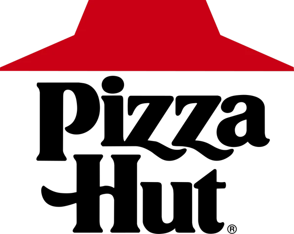
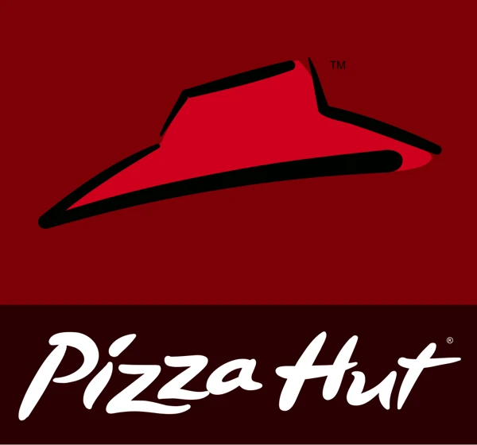
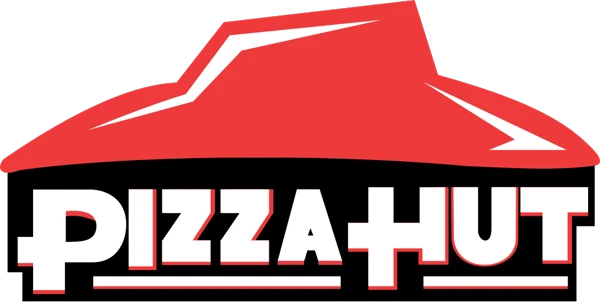
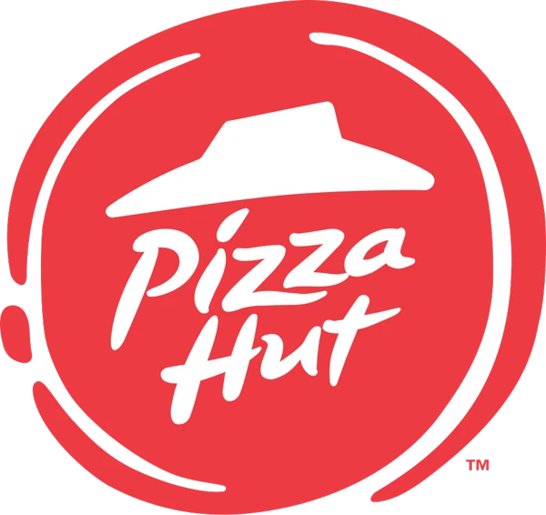
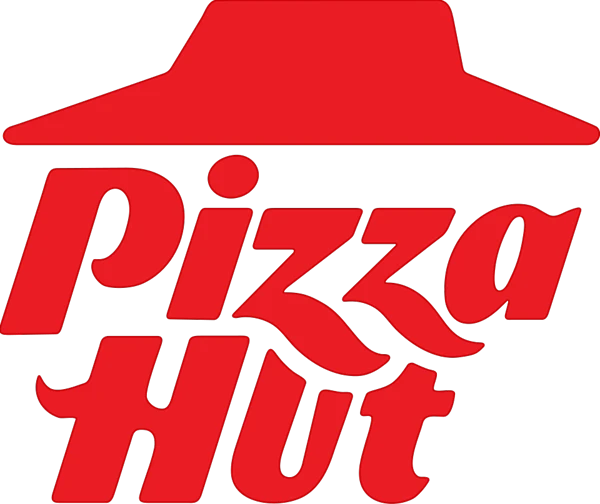
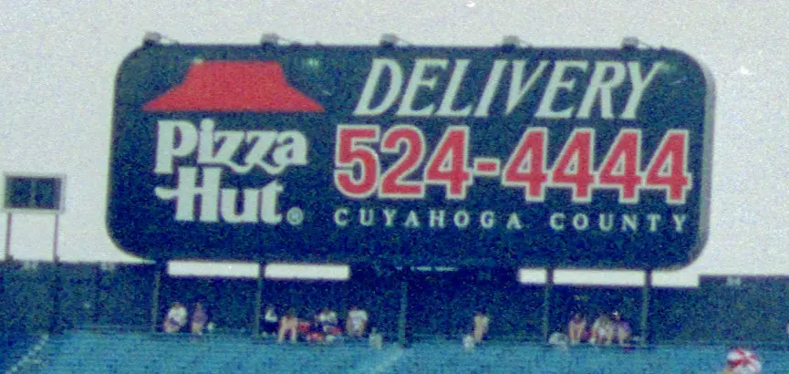

피자헛 Pizza Hut
피자헛(Pizza Hut)은 1958년 미국 캔자스에서 창립된 세계 최대 규모의 피자 프랜차이즈 브랜드이다.
최종 업데이트

피자헛은 어떤 브랜드인가
피자헛(Pizza Hut)은 1958년 댄 카니(Dan Carney)와 프랭크 카니(Frank Carney) 형제가 미국 캔자스주 위치타에서 어머니에게 빌린 600달러로 창업한 피자 프랜차이즈다. 간판에 여덟 글자만 들어가 'Pizza Hut'이라 이름 붙였다.
현재 모회사는 Yum Brands이며, 2024년 기준 전 세계 1만 9천여 개 매장을 운영하는 대표적 글로벌 외식 브랜드다.
피자헛은 어떻게 봐야 할까
핵심은 경쟁 구도다. 미국 피자 배달 시장에서 도미노(Domino's)가 약 50%로 1위, 피자헛이 약 29%로 2위, 파파존스(Papa John's)가 약 21%를 차지한다.
팬피자와 딥디시를 대중화한 원조이자 매장 식사형 프리미엄 모델로 성장했으나, 디지털 주문과 배달 속도 경쟁에서 도미노에 밀려 미국 동일 매장 매출이 열 분기 연속 하락했다. Yum Brands 산하 KFC·타코벨 대비 부진이 두드러져, 2026년 모회사가 약 27억 달러에 매각하기로 한 배경이 됐다.
한국에는 1985년 이태원 1호점으로 들어와 불고기피자·치즈크러스트 같은 현지화로 한때 호황을 누린 점도 맥락이다.
피자헛은 어떻게 시작되고 성장했나
1958년 위치타주립대에 다니던 댄·프랭크 카니 형제가 어머니에게 빌린 600달러로 위치타 다운타운의 작은 건물을 빌려 중고 장비로 첫 매장을 열었다. 이듬해인 1959년 프랜차이즈를 시작했고, 1963년 24개, 1966년 140개로 빠르게 늘며 위치타에 본사를 뒀다.
1969년 빨간 지붕 건축 양식을 도입했다. 1977년 매장 4천여 개로 성장한 형제는 3억 달러가 넘는 금액에 펩시코(PepsiCo)에 회사를 넘겼다.
1997년 펩시코는 외식 부문을 트라이콘(Tricon)으로 분사했고, 이 회사가 2002년 Yum Brands로 사명을 바꾸며 KFC·타코벨과 함께 국제 확장을 이끌었다.
피자헛의 브랜드 아이덴티티는 무엇인가
정체성의 핵심은 1969년 등장해 1974년 로고에 반영된 상징적인 '빨간 지붕'이다. 매장에서 가족이 함께 피자를 나누는 따뜻한 경험을 표상한다.
1999년 랜도(Landor)가 흘림체와 'Pizza'의 i 위 초록 점을 더한 로고로 바꿨으나, 2019년 브랜드 뿌리로 돌아간다는 취지로 빨간 지붕 로고를 되살렸다. 타깃은 가족과 친구 단위 고객이며, 보이스는 친근하면서도 과감하고 대담함을 지향한다.
색은 붉은 피자 소스를 연상시키는 빨강을 중심으로 쓴다.
피자헛의 대표 제품과 서비스는 무엇인가
대표 제품은 겉이 바삭하고 속은 부드러운 오리지널 팬피자와 두툼한 딥디시, 가장자리에 치즈를 채운 스터프드 크러스트다. 갈릭브레드 같은 사이드도 갖췄다.
미국 기준 라지 오리지널 팬피자가 약 11달러, 슈프림 스터프드 크러스트가 약 24달러 수준의 프리미엄 라인이다. 채널은 매장 식사와 배달·포장을 함께 운영하며 모바일·온라인 주문 비중을 키우고 있다.
피자헛은 누가 만들고 이끌었나
상위/소유 조직: 얌!
피자헛은 지금 어떤 상태인가
모회사는 미국 켄터키주 루이빌에 본사를 둔 Yum Brands이며, 피자헛 본사는 텍사스주 플레이노에 있다. 2024년 기준 매장 수는 1만 9천여 개이며 전 세계 100개국 이상에서 영업한다.
피자헛은 2025년 모회사 전체 매출의 약 12%를 차지했다. 2026년 6월 Yum Brands는 피자헛을 약 27억 달러에 매각하기로 합의했으며, 중국 사업은 얌차이나가 약 12억 달러, 그 외 지역은 사모펀드 롱레인지캐피털이 약 15억 달러에 인수한다.
브랜드 단독 연 매출 등 세부 수치는 미공개.
피자헛 연혁 — 주요 사건은 언제였나
피자헛 로고는 어떻게 변해왔나
- 1962–1974

1974–1999
2008–2017
2010–2014
2014–2019
2025–현재
시기는 위키데이터 로고 기간 또는 위키미디어 커먼즈 파일 정보 기준입니다. 이미지를 누르면 원본 파일과 라이선스를 볼 수 있습니다.
사진으로 보는 피자헛의 역사

자주 묻는 질문
피자헛는 어느 나라 브랜드인가요?
피자헛는 미국의 식음료 브랜드입니다.
피자헛는 언제 설립되었나요?
피자헛는 1958년 설립되었습니다.
피자헛의 브랜드 아이덴티티는 무엇인가요?
정체성의 핵심은 1969년 등장해 1974년 로고에 반영된 상징적인 '빨간 지붕'이다.
피자헛의 대표 제품은 무엇인가요?
대표 제품은 겉이 바삭하고 속은 부드러운 오리지널 팬피자와 두툼한 딥디시, 가장자리에 치즈를 채운 스터프드 크러스트다.
피자헛는 현재 어떤 상태인가요?
모회사는 미국 켄터키주 루이빌에 본사를 둔 Yum Brands이며, 피자헛 본사는 텍사스주 플레이노에 있다.
피자헛의 창업자는 누구인가요?
피자헛의 창업자는 Dan and Frank Carney입니다(위키데이터 기준).
피자헛의 모기업은 어디인가요?
피자헛의 모기업은 얌! 브랜드입니다(위키데이터 기준).
출처와 검증
피자헛 관련 참고: 공식 웹사이트 · 위키데이터 Q191615 · 한국어 위키백과 · 영어 위키백과. 브랜드명은 한글과 원어를 함께 표기하되 데이터에 없는 표기는 만들지 않습니다. 기원 국가·설립연도는 검수된 정의문에서 확인된 값을 우선하고, 없을 때만 공식 웹사이트 URL이 일치하는 위키데이터 개체의 값을 씁니다. 탄생일의 월·일은 위키데이터, 위키백과 정보상자, 본문 가운데 같은 연월로 확인되는 값만 싣고, 출처끼리 다르면 싣지 않습니다. 웹 첫 보관은 인터넷 아카이브가 공식 사이트 첫 화면을 처음 보관한 날로, 사이트 개설일과 다를 수 있습니다. 위키데이터 값은 2026-09-07 기준입니다.